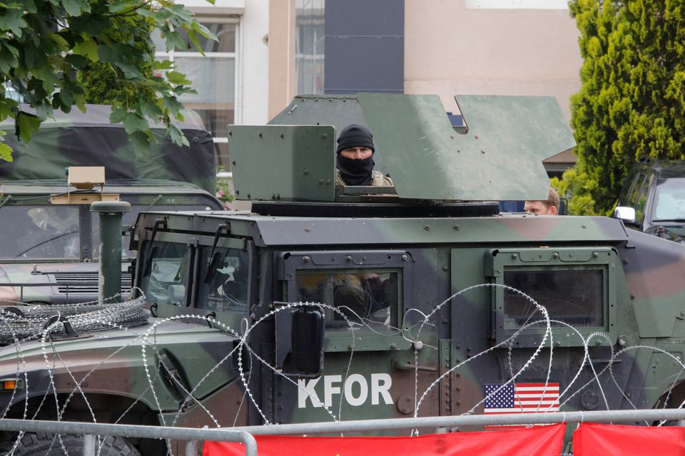

News
Featured Articles
NATO member Turkey to send troops to Kosovo amid unrest in the north
Reuters
June 3, 2023 1:29 PM GMT+3 Updated 10 days ago
Members of the NATO-led Kosovo Force (KFOR) stand guard in Leposavic
ISTANBUL, June 3 (Reuters) - Turkey plans to send commandos to Kosovo on Sunday and Monday in response to a NATO request to join the alliance's KFOR peacekeeping force following unrest in the north of the country, the Turkish defense ministry said.
In a statement on Saturday, the ministry called for restraint and constructive dialogue to resolve a crisis that it said could harm regional security and stability.
"Our assigned unit (a commando battalion) is planned to be deployed to... Kosovo on June 4-5," the ministry said.
A political crisis that has spiraled into violence in Kosovo's north has intensified since ethnic Albanian mayors took office in the region's Serb-majority area, which led the U.S. and its allies to rebuke Pristina. The majority Serb population had boycotted the April election, allowing ethnic Albanians to be elected.
In violence on Monday, 30 peacekeepers and 52 Serbs who protested against the installation of the mayors were injured. The violence prompted NATO to announce it would send additional troops on top of 700 already on their way to the Balkan country to boost its 4,000 strong mission.